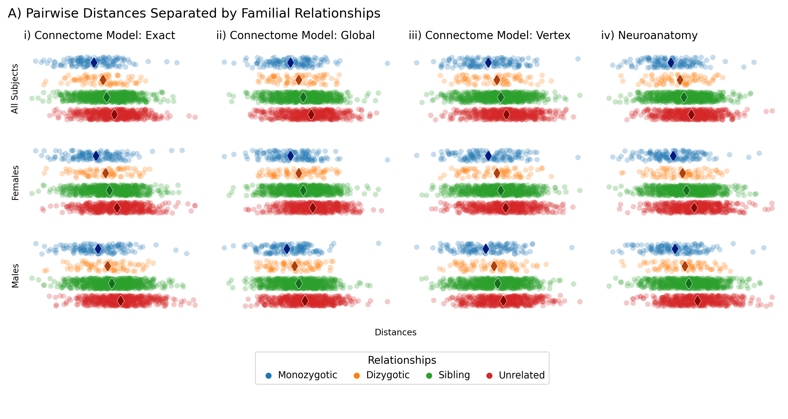
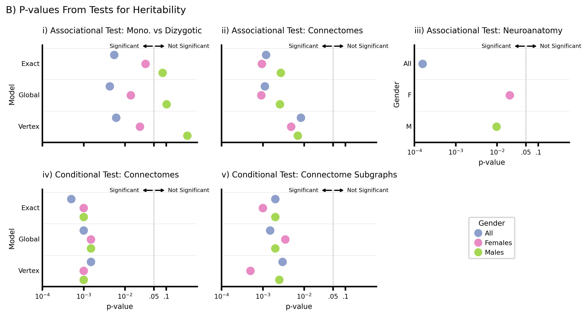

Histogram Plots#
%load_ext autoreload
%autoreload 2
The autoreload extension is already loaded. To reload it, use:
%reload_ext autoreload
from itertools import combinations
from pathlib import Path
import matplotlib as mpl
import matplotlib.pyplot as plt
import numpy as np
import pandas as pd
import scipy.stats as stats
import seaborn as sns
from pkg.plot import Figure, Panel, SmartSVG, Text, stripplot, stripplot_cov
from scipy.spatial.distance import squareform
df = pd.read_csv(
"../../twins/data/subject_metadata/truncated_restricted_processed_valid_subjects.csv"
)
df = df.sort_values("Subject")
df.head()
# remove singletons
uniques, counts = np.unique(df.Family_ID, return_counts=True)
singletons = []
for unique, count in zip(uniques, counts):
if count == 1:
sub = df[df.Family_ID == unique].Subject.iloc[0]
singletons.append(sub)
singleton_idx = df.Subject.isin(singletons).values
df = df[~singleton_idx]
male_idx = df.Gender == "M"
female_idx = df.Gender == "F"
scales = ["exact", "global", "vertex"]
rel_names = ["mz", "dz", "sib", "step", "unrel"]
# rel_names = ["mz", "dz", "sib", "unrel"]
genders = ["all", "male", "female"]
Plot for each parcellation#
p = Path("../../twins/notebooks/outs/1-connectome-distances/arrs/")
relationships = np.load(
"../../twins/notebooks/outs/1-connectome-distances/arrs/relationship_distances.npy"
)
relationships = relationships[~singleton_idx, :][:, ~singleton_idx]
parc_full = "Schaefer1000_space-MNI152NLin6_res-1x1x1"
parc = "Schaefer1000"
distances = []
for scale in ["exact", "global", "vertex"]:
file = list(p.glob(f"{scale}*{parc}.npy"))[0]
dist = np.load(file)
dist_mat = squareform(np.linalg.norm(dist, axis=(1, 2)))
dist_mat = dist_mat[~singleton_idx, :][:, ~singleton_idx]
cov = np.load(
f"../../twins/notebooks/outs/5-covariate-distances/arrs/covariate_distances_{parc_full}.npy"
)
cov = squareform(np.linalg.norm(cov, axis=(1, 2)))
cov = cov[~singleton_idx, :][:, ~singleton_idx]
for gender in genders:
if gender == "male":
X = squareform(dist_mat[male_idx, :][:, male_idx])
Y = squareform(relationships[male_idx, :][:, male_idx])
Z = squareform(cov[male_idx, :][:, male_idx])
elif gender == "female":
X = squareform(dist_mat[female_idx, :][:, female_idx])
Y = squareform(relationships[female_idx, :][:, female_idx])
Z = squareform(cov[female_idx, :][:, female_idx])
else:
X = squareform(dist_mat)
Y = squareform(relationships)
Z = squareform(cov)
for i in range(5):
if i == 3:
continue
if i == 4:
idx = np.random.choice(np.where(Y == 4)[0], 500, replace=False)
else:
idx = Y == i
for j, q in zip(X[idx], Z[idx]):
distances.append([j, q, rel_names[i], scale, gender])
plot_df = pd.DataFrame(
distances, columns=["distance", "covariate", "relationship", "scale", "gender"]
)
plot_df = pd.read_csv("../data/pvalues.csv")
plot_df
| Parcellation | Gender | test | model | pvalue | |
|---|---|---|---|---|---|
| 0 | Glasser | M | a | Exact | 0.081550 |
| 1 | Glasser | F | a | Exact | 0.031428 |
| 2 | Glasser | All | a | Exact | 0.005481 |
| 3 | Glasser | M | a | Global | 0.101967 |
| 4 | Glasser | F | a | Global | 0.013838 |
| 5 | Glasser | All | a | Global | 0.004286 |
| 6 | Glasser | M | a | Vertex | 0.323899 |
| 7 | Glasser | F | a | Vertex | 0.023016 |
| 8 | Glasser | All | a | Vertex | 0.006115 |
| 9 | Glasser | All | b | Exact | 0.001195 |
| 10 | Glasser | F | b | Exact | 0.000947 |
| 11 | Glasser | M | b | Exact | 0.002723 |
| 12 | Glasser | All | b | Global | 0.001117 |
| 13 | Glasser | F | b | Global | 0.000917 |
| 14 | Glasser | M | b | Global | 0.002588 |
| 15 | Glasser | All | b | Vertex | 0.008350 |
| 16 | Glasser | F | b | Vertex | 0.004841 |
| 17 | Glasser | M | b | Vertex | 0.007018 |
| 18 | Glasser | M | c | Covariate | 0.009771 |
| 19 | Glasser | F | c | Covariate | 0.020404 |
| 20 | Glasser | All | c | Covariate | 0.000158 |
| 21 | Glasser | All | d | Exact | 0.000500 |
| 22 | Glasser | M | d | Exact | 0.001000 |
| 23 | Glasser | F | d | Exact | 0.001000 |
| 24 | Glasser | All | d | Global | 0.001000 |
| 25 | Glasser | M | d | Global | 0.001499 |
| 26 | Glasser | F | d | Global | 0.001499 |
| 27 | Glasser | All | d | Vertex | 0.001499 |
| 28 | Glasser | M | d | Vertex | 0.001000 |
| 29 | Glasser | F | d | Vertex | 0.001000 |
| 30 | Glasser | All | e | Exact | 0.001999 |
| 31 | Glasser | M | e | Exact | 0.001999 |
| 32 | Glasser | F | e | Exact | 0.001000 |
| 33 | Glasser | All | e | Global | 0.001499 |
| 34 | Glasser | M | e | Global | 0.001999 |
| 35 | Glasser | F | e | Global | 0.003498 |
| 36 | Glasser | All | e | Vertex | 0.002999 |
| 37 | Glasser | M | e | Vertex | 0.002499 |
| 38 | Glasser | F | e | Vertex | 0.000500 |
plot_df.gender.replace(to_replace=dict(All="all", F="female", M="male"), inplace=True)
sns.set_context("paper", font_scale=1)
gender = ["all", "female", "male"]
scale = ["exact", "global", "vertex"]
layout = [
["exact-all", "global-all", "vertex-all", "covariate-all"],
["exact-female", "global-female", "vertex-female", "covariate-female"],
["exact-male", "global-male", "vertex-male", "covariate-male"],
["legend", "legend", "legend", "legend"],
]
col_names = [
"i) Connectome Model: Exact",
"ii) Connectome Model: Global",
"iii) Connectome Model: Vertex",
]
fig, axes = plt.subplot_mosaic(
layout,
figsize=(10, 5),
width_ratios=[1, 1, 1, 1],
height_ratios=[1, 1, 1, 1],
dpi=300,
constrained_layout=True,
)
ax_arr = np.array([val for key, val in axes.items() if key != "legend"]).reshape(3, -1)
handles, labels = stripplot(plot_df, ax_arr[:3, :3], col_names=col_names)
stripplot_cov(plot_df, ax_arr[:3, -1])
# handle limits
limits = [[a.get_xlim() for a in b] for b in ax_arr]
ax = axes["legend"]
sns.despine(bottom=True, left=True, top=True, right=True, ax=ax)
ax.legend(
handles[:4],
["Monozygotic", "Dizygotic", "Sibling", "Unrelated"],
loc=10,
title="Relationships",
ncol=4,
handletextpad=0,
columnspacing=1,
frameon=True,
)
ax.axis("off")
fig.suptitle(
"A) Pairwise Distances Separated by Familial Relationships",
x=0.0,
y=1.05,
horizontalalignment="left",
fontsize=12,
)
fig.supxlabel("Distances", y=0.2, fontsize=8)
fig.savefig("./figures/4a.svg", bbox_inches="tight")

Part B#
sns.set_context("talk", font_scale=0.5)
# sns.set_context("talk", font_scale=0.65)
data = pd.read_csv("../data/pvalues.csv")
# options for plots
gap = 0.5
fontdict = dict(fontsize=10)
ytickloc = [1, 2, 3]
titles = [
"i) Associational Test: Mono. vs Dizygotic",
"ii) Associational Test: Connectomes",
"iii) Associational Test: Neuroanatomy",
"iv) Conditional Test: Connectomes",
"v) Conditional Test: Connectome Subgraphs",
]
# setting variables
models = ["Exact", "Global", "Vertex"]
covariate_model = ["Covariate"]
tests = pd.unique(data.test)
genders = ["All", "F", "M"]
nsubplots = len(tests) # tests
nmodels = len(models) # model
ngenders = len(genders) # gender
# create empty fig
width = nsubplots * 2
fig, all_axes = plt.subplot_mosaic(
"""
ABC
DEF
""",
figsize=(width, 5),
dpi=300,
# sharex=True,
constrained_layout=True,
)
axes = {key: ax for key, ax in all_axes.items() if key != "F"}
for cdx, ax in enumerate(axes.values()):
test = tests[cdx]
test_data = data.loc[data.test == test]
test_data = test_data.sort_values(["model", "Gender"])
# xs = np.log10(test_data.pvalue)
xs = test_data.pvalue
length = len(xs)
if length == 9:
ys = []
for ytick in ytickloc:
spacing = 1 / (3 + gap)
ys.extend([ytick - spacing, ytick, ytick + spacing])
else:
ys = ytickloc
colors = ["#8da0cb", "#e78ac3", "#a6d854"]
scatter = ax.scatter(
xs,
ys,
c=colors * (length // 3),
)
for idx, (label, ax) in enumerate(axes.items()):
sns.despine(ax=ax)
# xaxis
ax.set_xscale("log")
ax.set_xlim(10**-3, 10**-0.25)
xtick_loc = [0.0001, 0.001, 0.01, 0.05, 0.1]
ax.set_xticks(xtick_loc)
ax.set_xticklabels(
["$10^{-4}$", "$10^{-3}$", "$10^{-2}$", ".05", ".1"],
# rotation=90,
fontdict=dict(fontsize=8),
)
ax.tick_params(axis="x", length=5, width=2)
ax.set_xlabel("p-value")
ax.minorticks_off()
if label in ["A", "B"]:
ax.set_xticklabels([])
ax.set_xlabel("")
# yaxis
ax.set_yticks([])
ax.tick_params(axis="y", length=0)
ax.set_ylim(0.4, 3.5)
ax.invert_yaxis()
# set title
ax.set_title(titles[idx], loc="left", fontdict=fontdict, pad=15)
# lines
ax.axvline(0.05, ls="--", lw=0.5, c="gray") # set alpha-0.05 line
for ytick in ytickloc:
ax.axhline(ytick - 0.5, ls="-", lw=0.25, alpha=0.2, c="k")
# significant labeling
ymin, ymax = ax.get_ylim()
ymax += 0.035
ax.annotate(
"Significant",
xy=(0.05, ymax),
xytext=(0.022, ymax),
size=7,
arrowprops=dict(
facecolor="black",
arrowstyle="<-",
),
horizontalalignment="right",
verticalalignment="center",
)
ax.annotate(
"Not Significant",
xy=(0.05, ymax),
xytext=(0.11, ymax),
size=7,
arrowprops=dict(
facecolor="black",
arrowstyle="<-",
),
horizontalalignment="left",
verticalalignment="center",
)
if label in ["A", "D"]:
# yaxis
ax.set_ylabel("Model")
ax.set_yticks(
ticks=ytickloc,
labels=models,
# rotation=90,
va="center",
)
# # Twin ax
# twin_ax = ax.twinx()
# twin_ax.yaxis.set_ticks_position("left")
# twin_ax.tick_params(axis="y", direction="in", pad=-5, length=0)
# sns.despine(ax=twin_ax)
# twin_ax.set_ylim(ax.get_ylim())
# # inner ticks
# ys = []
# for ytick in ytickloc:
# spacing = 1 / (3 + gap)
# ys.extend([ytick - spacing, ytick, ytick + spacing])
# twin_ax.set_yticks(
# ys,
# labels=genders * 3,
# )
# for tick in twin_ax.get_yticklabels():
# tick.set_horizontalalignment("left")
if label == "C":
ax.set_ylabel("Gender")
ax.set_yticks(ticks=ytickloc, labels=genders, va="center")
colors = ["#8da0cb", "#e78ac3", "#a6d854"]
handles = [
mpl.lines.Line2D(
[0],
[0],
marker="o",
color="w",
label="Circle",
markerfacecolor=c,
markersize=10,
markeredgewidth=0.0,
)
for c in colors
]
ax = all_axes["F"]
sns.despine(bottom=True, left=True, top=True, right=True, ax=ax)
ax.legend(
handles,
["All", "Females", "Males"],
loc=10,
title="Gender",
ncol=1,
handletextpad=0,
columnspacing=1,
frameon=True,
)
ax.axis("off")
fig.suptitle(
"B) P-values From Tests for Heritability",
x=0.0,
y=1.065,
horizontalalignment="left",
fontsize=12,
)
fig.savefig("./figures/5b.svg", bbox_inches="tight")

Merge#
dist = SmartSVG(f"./figures/5a.svg")
dist.set_width(1000)
dist.move(10, 0)
pvalues = SmartSVG("./figures/5b.svg")
pvalues.set_width(1000)
pvalues.move(0, dist.height * 0.75)
fig = Figure(
dist.width * 0.79,
(dist.height + pvalues.height) * 0.77,
dist,
pvalues,
)
fig

fig.save("./figures/4-composite.svg")
import cairosvg
cairosvg.svg2pdf(url="./figures/4-composite.svg", write_to="./figures/4-composite.pdf")
pvalue heatmap#
pvalues = pd.read_csv("../results/pvalues.csv")
pvalues.loc[:, "corrected_pvalue"] = np.log10(pvalues.loc[:, "corrected_pvalue"])
import warnings
from matplotlib.transforms import Bbox
from scipy.stats import rankdata
from seaborn.utils import relative_luminance
def plot_pvalues(
df,
ax,
show_sig=False,
cbar=False,
cbar_ax=None,
vmin=None,
vmax=None,
yticklabels=False,
xticklabels=False,
):
heatmap_kws = dict(
cmap="RdBu_r",
square=True,
cbar=cbar,
cbar_ax=cbar_ax,
vmax=vmax,
vmin=vmin,
center=0,
xticklabels=xticklabels,
yticklabels=yticklabels,
)
pvals = df.corrected_pvalue.values.reshape(3, -1)
is_significant = df.is_significant.values.reshape(3, -1)
nrows, ncols = pvals.shape
im = sns.heatmap(data=pvals, ax=ax, **heatmap_kws)
raveled_idx = np.ravel_multi_index(np.nonzero(pvals), pvals.shape)
zipped = zip(raveled_idx, df.is_significant)
# Make x's and o's
colors = im.get_children()[0].get_facecolors()
pad = 0.2
for idx, is_significant in zipped:
i, j = np.unravel_index(idx, (nrows, ncols))
# REF: seaborn heatmap
lum = relative_luminance(colors[idx])
text_color = ".15" if lum > 0.408 else "w"
lw = 1
if is_significant == True:
xs = [j + pad, j + 1 - pad]
ys = [i + pad, i + 1 - pad]
ax.plot(xs, ys, color=text_color, linewidth=lw)
xs = [j + 1 - pad, j + pad]
ys = [i + pad, i + 1 - pad]
ax.plot(xs, ys, color=text_color, linewidth=lw)
fig = cbar_ax.get_figure()
_ = fig.colorbar(
im.get_children()[0],
cax=cbar_ax,
fraction=1,
shrink=10,
ticklocation="left",
)
parcellations = [
"AAL",
"CPAC200",
"DKT",
"Desikan",
"Glasser",
"Yeo-17-liberal",
"Yeo-17",
"Yeo-7-liberal",
"Yeo-7",
"Schaefer200",
"Schaefer300",
"Schaefer400",
"Schaefer1000",
]
pvalues
<pkg.plot.svg.SmartSVG at 0x7f39608294f0>
pvalues.corrected_pvalue.min()
-2.7336519257505585
# titles = [
# "i) Assoc. Test: MZ. vs DZ Connectomes",
# "ii) Assoc. Test: Connectomes",
# "iii) Assoc. Test: Neuroanatomy",
# "iv) Cond. Test: Connectomes",
# "v) Cond. Test: Connectome Subgraphs",
# ]
titles = [
"I) MZ. vs DZ Connectomes",
"II) All Connectomes",
"III) Neuroanatomy",
"IV) All Connectomes",
"V) Connectome Subgraphs",
]
hypotheses = [
"dcorr_twins_only",
"dcorr_all",
"dcorr_neuroanatomy",
"cdcorr_all",
"cdcorr_subgraphs",
]
vmin = pvalues.corrected_pvalue.min()
vmax = pvalues.corrected_pvalue.max()
for parcellation in parcellations:
fig, axes = plt.subplots(
ncols=6,
figsize=(10, 2),
width_ratios=[0.1, 1, 1, 0.7, 1, 1],
dpi=300,
constrained_layout=True,
)
fig.suptitle(
"B) P-values From Tests for Heritability",
x=0.0,
y=1.065,
horizontalalignment="left",
fontsize=12,
)
parc_df = pvalues.loc[pvalues.parcellation == parcellation].copy()
# vmin = parc_df.corrected_pvalue.min()
# vmax = parc_df.corrected_pvalue.max()
for idx, hyp in enumerate(hypotheses):
if hyp != "cdcorr_subgraphs":
hyp_df = parc_df.loc[parc_df.hypothesis == hyp].copy()
elif hyp == "cdcorr_subgraphs":
hyp_df = parc_df.loc[parc_df.hypothesis == "cdcorr_all"].copy()
hyp_df.loc[:, "corrected_pvalue"] -= np.log10(
np.random.uniform(0.31, 0.5, len(hyp_df.loc[:, "corrected_pvalue"]))
)
hyp_df.loc[:, "is_significant"] = hyp_df.loc[
:, "corrected_pvalue"
] <= np.log10(0.05)
ax = axes[idx + 1]
if idx + 1 == 1:
kwargs = dict(
yticklabels=["All", "Females", "Males"],
xticklabels=["Exact", "Global", "Vertex"],
)
elif idx + 1 == 3:
kwargs = dict(xticklabels=False)
else:
kwargs = dict(xticklabels=["Exact", "Global", "Vertex"])
plot_pvalues(
hyp_df,
ax,
cbar=True,
cbar_ax=axes[0],
vmin=np.floor(vmin),
vmax=0,
**kwargs,
)
ax.set_title(titles[idx], fontdict=dict(fontsize=8), loc="left")
# ax.set_xticklabels(
# ax.get_xticklabels(),
# # rotation=90,
# fontdict=dict(fontsize=8),
# )
ax.tick_params(labelsize=6)
cbar = axes[0]
cbar.tick_params(
axis="y",
direction="in",
length=5,
width=1,
color="w",
labelsize=6,
)
cbar.plot(
[0, 1],
[np.log10(0.05), np.log10(0.05)],
zorder=100,
color="black",
linewidth=2,
)
cbar.annotate(
r"$\alpha$",
(0.05, np.log10(0.05)),
xytext=(-20, 0),
textcoords="offset points",
va="center",
ha="right",
arrowprops={"arrowstyle": "-", "linewidth": 2, "relpos": (0, 0.5)},
)
cbar.yaxis.set_ticks_position("left")
cbar.yaxis.set_major_formatter(mpl.ticker.ScalarFormatter(useMathText=True))
cbar.yaxis.set_major_locator(mpl.ticker.MaxNLocator(integer=True))
axes[1].set_ylabel("Gender Grouping", fontsize=8)
_ = [axes[i].set_xlabel("Connectome Model", fontsize=8) for i in [1, 2, 4, 5]]
fig.savefig(f"./figures/distances/pvalue_{parcellation}.svg", bbox_inches="tight")
import cairosvg
from pkg.plot import Figure, Panel, SmartSVG, Text, stripplot, stripplot_cov
for parcellation in parcellations:
dist = SmartSVG(f"./figures/distances/{parcellation}.svg")
dist.set_width(1000)
dist.move(10, 0)
pfig = SmartSVG(f"./figures/distances/pvalue_{parcellation}.svg")
pfig.set_width(1000)
pfig.move(10, 0)
pfig.move(0, dist.height * 0.77)
fig = Figure(
dist.width * 0.81,
(dist.height + pfig.height) * 0.77,
dist,
pfig,
)
fig.save(f"./figures/distances/{parcellation}-composite.svg")
cairosvg.svg2pdf(
url=f"./figures/distances/{parcellation}-composite.svg",
write_to=f"./figures/distances/{parcellation}-composite.pdf",
)